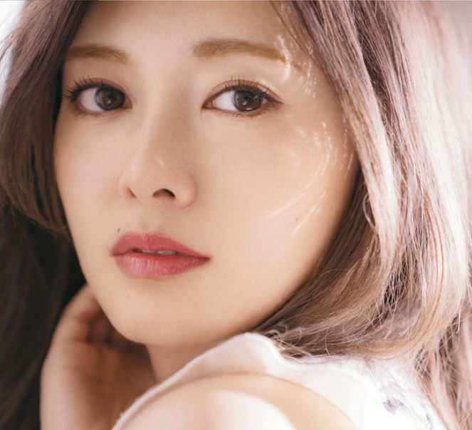

1992年8月20日、群馬県で生まれる[9]。幼稚園児の頃、将来の夢はケーキ屋だったが、小学6年生の時、ファッションに対する興味からスタイリスト、モデルを夢見るようになる[10]。中学1年生の時、モデルを通じて音楽が好きになり、吹奏楽部へ入部[10]。その後、ソフトボール部に転部し、中学1年生の時から代走、中学2年生の時から2番セカンドでレギュラー出場した[10]。とくにバントを得意とし、50メートル走7秒台の脚でセーフティバントもできた[11]。4番も任され[10]、右投左打で[12]、打率3割、通算本塁打約10本を記録した[10]。
群馬県の中学校を卒業後、埼玉県の女子高等学校へ進学[10]。母親と共に埼玉県へ引越し[13]、高校2年生の時まで保育士を目指し[14]、保育関係の選択授業や検定試験を受けていたが[15]、高校3年生の時に進路相談で音楽の専門学校を知り、夏休みに体験授業を受けたことがきっかけで音楽の専門学校へ進学[16]。両親からは短期大学を勧められたが音楽の道で頑張ることを約束し、説得した[16]。専門学生時代は歌のレッスン、リスニング、音楽理論、ゴスペルなどを学び[10]、SPEEDやPerfumeのような小規模のダンスボーカルユニットを目標に勉強していたが[14]、担任講師から勧められ、乃木坂46の1期生オーディションを受験する[16]。
2011年8月21日、乃木坂46の1期生オーディションに合格、オーディションでは西野カナの「このままで」を歌った[17]。暫定選抜メンバーに選ばれ、立ち位置は中列だった[18]。ダンス経験がなかったため、乃木坂46の連日朝晩続くダンス練習に苦闘し、歌手とは違うものになってしまいそうで、想像していたのとは違うところへ来てしまったのではないかと考えたが、乃木坂46のメンバーと話し合い、両親との約束を思い出した結果、この活動に前向きに取り組むことを決めた[10]。2012年2月22日、乃木坂46の1stシングル「ぐるぐるカーテン」でCDデビュー[19]。同年5月2日、乃木坂46の2ndシングル「おいでシャンプー」のカップリング曲「偶然を言い訳にして」で初のユニットを務めた[20]。同年11月8日、『GirlsAward 2012 AUTUMN/WINTER』で西野七瀬と共にモデルデビュー[21]。
2013年1月1日、『CDTVスペシャル! 年越しプレミアライブ2012→2013』（TBSテレビ）に乃木坂46として出演し、「制服のマネキン」で初のセンターを披露[22]。同年1月5日、『うまズキッ!』（フジテレビ）でバラエティ番組にMCとして初の単独レギュラー出演を開始した[23]。同年1月13日、乃木神社で成人式を迎えた[24]。同年3月23日、ファッション誌『Ray』の専属モデルに起用され[25]、乃木坂46で初のファッション誌専属モデルとなった[26]。同年6月15日、2009年の秋華賞を制したレッドディザイアの全弟に「キミノナハセンター」と命名[27]。同年7月3日、乃木坂46の6thシングル「ガールズルール」で1stシングル「ぐるぐるカーテン」から5thシングル「君の名は希望」までセンターを務めた生駒里奈に代わってセンターを務めた[28]。それまでは生駒里奈についていくことのみを意識していたが「ガールズルール」でセンターを務めたことによって出演番組で応対を任せられるようになり、グループ全体を意識するようになった[29]。同年11月、『Samantha Tiara 2013 クリスマス ジュエリー』のCMに出演し[30]、サマンサタバサのイメージモデルとして「サマンサミューズ」に就任した[31]。同年11月23日、『Ray』で初の単独表紙を務めた[32]。2014年6月、『16人のプリンシパル trois』で主要十役を制覇した[33]。同年12月10日、初のソロ写真集『清純な大人』を発売した[34]。写真集は週間推定売上3万1807部を記録し[35]、2014年12月22日付のオリコン週間ランキングのBOOK総合部門で7位を獲得[36]、初版発行部数は10万部を突破した[37]。
2015年1月23日、1stフォトブック『MAI STYLE』を発売[38]。写真集は週間推定売上1万9004部を記録し[39]、2015年2月2日付のオリコン週間ランキングのBOOK総合部門で4位を獲得した[38]。2016年8月23日、『Ray』の2016年10月号から3号連続でカバーガールを務める[40]。同年9月2日、HUSTLE PRESSの「ダンスが上手いと思うアイドルランキング」で57位を獲得した[41]。同年12月7日、2ndソロ写真集のTwitterを開設した[42]。
2017年2月7日、2ndソロ写真集『パスポート』（講談社）を発売[注 3]、タイトルは「いろんなお仕事に挑戦していけたら」という思いを込めて[44]、秋元康が提案し、白石麻衣が決定した[45]。帯には「白石麻衣は、もう、どこへでも行ける。写真集を眺めながら、ふとそんなことを思った」という秋元康のコメントが添えられた[46]。写真集は週間推定売上10万3520部を記録し[47]、2017年2月20日付のオリコン週間ランキングのBOOK総合部門、写真集部門で1位を獲得、女性ソロ写真集としては初めて週間10万部を突破し、歴代最高記録を達成した[48]。2017年上半期オリコン“本”ランキング写真集部門で1位[49]。翌年になっても増刷が続き、11月には通算22度目の重版が行われ、累計発行部数は33万部を突破した[50]。2018年3月12日、20thシングル「シンクロニシティ」で「ガールズルール」以来約4年9か月ぶりの単独センターを務めることが発表された[51]。同年3月23日発売の『Ray』5月号をもって同雑誌専属モデルを卒業した[6]。同年3月30日、東京ドームで行われたプロ野球の開幕戦（読売ジャイアンツ対阪神タイガース）で試合前に桜井玲香・西野七瀬・生田絵梨花・久保史緒里・山下美月とともに国歌斉唱を行った[52]。同年5月12日放送の『世にも奇妙な物語 '18春の特別編』「フォロワー」（フジテレビ）で、ドラマ単独初主演[53]。同年5月17日発売の『LARME』034号をもって2012年の創刊号より約6年間務めてきた同誌レギュラーモデルを卒業[54]。同年6月21日、「キリン 氷結®のプロモーションのため」にInstagramのアカウントを期間限定で開設[55][56]。7月4日に発表された「2018年 上半期 TV－CM 会社数ランキング」（エム・データ）において女性タレント部門1位（起用15社）となった[57]。同年11月、『日経トレンディ』が選ぶ「2018年 今年の顔」に選出された[58]。同年12月4日、「2018年TV-CM会社数ランキング（女性）」（エム・データ）で女性タレント部門1位（起用20社）となった[59]。